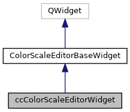
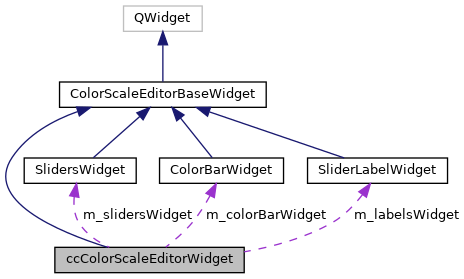

|
ACloudViewer
3.9.4
A Modern Library for 3D Data Processing
|
|
ACloudViewer
3.9.4
A Modern Library for 3D Data Processing
|
Color scale editor dialog. More...
#include <ecvColorScaleEditorWidget.h>


Signals | |
| void | stepSelected (int index) |
| Signal emitted when a slider is selected. More... | |
| void | stepModified (int index) |
| Signal emitted when a slider is modified. More... | |
Public Member Functions | |
| ccColorScaleEditorWidget (QWidget *parent=nullptr, Qt::Orientation orientation=Qt::Horizontal) | |
| Default constructor. More... | |
| ~ccColorScaleEditorWidget () override=default | |
| Destructor. More... | |
| int | getStepCount () const |
| Returns the current number of color scale steps. More... | |
| const ColorScaleElementSlider * | getStep (int index) |
| Returns a given slider (pointer on) More... | |
| void | setStepColor (int index, QColor color) |
| Sets a given slider color. More... | |
| void | setStepRelativePosition (int index, double relativePos) |
| Sets a given slider relative position. More... | |
| int | getSelectedStepIndex () const |
| Returns currently selected step index. More... | |
| void | setSelectedStepIndex (int index, bool silent=false) |
| Sets currently selected step index. More... | |
| void | deleteStep (int index) |
| Deletes a given step. More... | |
| void | exportColorScale (ccColorScale::Shared &destScale) const |
| Exports the current color scale. More... | |
| void | importColorScale (ccColorScale::Shared scale) |
| Imports the current color scale. More... | |
| void | showLabels (bool state) |
| Sets whether to show the color elements labels or not. More... | |
| void | setLabelColor (QColor color) |
| Sets the labels color. More... | |
| void | setLabelPrecision (int precision) |
| Sets the labels precision. More... | |
| void | setSliders (SharedColorScaleElementSliders sliders) override |
| Sets associated sliders set. More... | |
 Public Member Functions inherited from ColorScaleEditorBaseWidget Public Member Functions inherited from ColorScaleEditorBaseWidget | |
| ColorScaleEditorBaseWidget (SharedColorScaleElementSliders sliders, Qt::Orientation orientation, int margin, QWidget *parent=nullptr) | |
| Defautl constructor. More... | |
| int | length () const |
| Returns useful length. More... | |
| Qt::Orientation | getOrientation () const |
| Returns orientation. More... | |
| int | getMargin () const |
| Returns margin. More... | |
Protected Slots | |
| void | onPointClicked (double relativePos) |
| Slot called when a 'point' is clicked on the color bar. More... | |
| void | onSliderModified (int sliderIndex) |
| Slot called when a slider is moved or its color is changed. More... | |
| void | onSliderSelected (int sliderIndex) |
| Slot called when a slider is selected. More... | |
Protected Attributes | |
| ColorBarWidget * | m_colorBarWidget |
| Associated color bar. More... | |
| SlidersWidget * | m_slidersWidget |
| Associated sliders widget. More... | |
| SliderLabelWidget * | m_labelsWidget |
| Associated (sliders) labels widget. More... | |
| Protected Attributes inherited from ColorScaleEditorBaseWidget | |
| SharedColorScaleElementSliders | m_sliders |
| Associated sliders. More... | |
| Qt::Orientation | m_orientation |
| Orientation. More... | |
| int | m_margin |
| Margin. More... | |
Color scale editor dialog.
Definition at line 224 of file ecvColorScaleEditorWidget.h.
| ccColorScaleEditorWidget::ccColorScaleEditorWidget | ( | QWidget * | parent = nullptr, |
| Qt::Orientation | orientation = Qt::Horizontal |
||
| ) |
Default constructor.
Definition at line 500 of file ecvColorScaleEditorWidget.cpp.
References SlidersWidget::addNewSlider(), ecvColor::blue(), DEFAULT_LABEL_HEIGHT, m_colorBarWidget, m_labelsWidget, ColorScaleEditorBaseWidget::m_orientation, ColorScaleEditorBaseWidget::m_sliders, m_slidersWidget, onPointClicked(), onSliderModified(), onSliderSelected(), and ecvColor::red().
|
overridedefault |
Destructor.
| void ccColorScaleEditorWidget::deleteStep | ( | int | index | ) |
Deletes a given step.
Warning: first and last steps shouldn't be deleted!
Definition at line 693 of file ecvColorScaleEditorWidget.cpp.
References ColorScaleEditorBaseWidget::m_sliders, and onSliderSelected().
Referenced by ccColorScaleEditorDialog::deletecSelectedStep().
| void ccColorScaleEditorWidget::exportColorScale | ( | ccColorScale::Shared & | destScale | ) | const |
Exports the current color scale.
Definition at line 660 of file ecvColorScaleEditorWidget.cpp.
References ColorScaleEditorBaseWidget::m_sliders.
Referenced by ccColorScaleEditorDialog::copyCurrentScale(), and ccColorScaleEditorDialog::saveCurrentScale().
|
inline |
Returns currently selected step index.
Definition at line 253 of file ecvColorScaleEditorWidget.h.
Referenced by ccColorScaleEditorDialog::changeSelectedStepColor(), ccColorScaleEditorDialog::changeSelectedStepValue(), ccColorScaleEditorDialog::deletecSelectedStep(), and ccColorScaleEditorDialog::setScaleModeToRelative().
|
inline |
Returns a given slider (pointer on)
Definition at line 242 of file ecvColorScaleEditorWidget.h.
Referenced by ccColorScaleEditorDialog::changeSelectedStepColor(), ccColorScaleEditorDialog::changeSelectedStepValue(), and ccColorScaleEditorDialog::onStepModified().
|
inline |
Returns the current number of color scale steps.
Definition at line 237 of file ecvColorScaleEditorWidget.h.
Referenced by ccColorScaleEditorDialog::changeSelectedStepValue(), ccColorScaleEditorDialog::deletecSelectedStep(), ccColorScaleEditorDialog::onStepModified(), and ccColorScaleEditorDialog::onStepSelected().
| void ccColorScaleEditorWidget::importColorScale | ( | ccColorScale::Shared | scale | ) |
Imports the current color scale.
Definition at line 645 of file ecvColorScaleEditorWidget.cpp.
References SlidersWidget::addNewSlider(), color, ColorScaleEditorBaseWidget::m_sliders, and m_slidersWidget.
Referenced by ccColorScaleEditorDialog::setActiveScale().
|
protectedslot |
Slot called when a 'point' is clicked on the color bar.
Definition at line 566 of file ecvColorScaleEditorWidget.cpp.
References SlidersWidget::addNewSlider(), color, DEFAULT_SLIDER_SYMBOL_SIZE, ColorScaleEditorBaseWidget::length(), m_colorBarWidget, ColorScaleEditorBaseWidget::m_sliders, m_slidersWidget, onSliderModified(), SlidersWidget::select(), and ecvColor::white().
Referenced by ccColorScaleEditorWidget().
|
protectedslot |
Slot called when a slider is moved or its color is changed.
Definition at line 611 of file ecvColorScaleEditorWidget.cpp.
References m_colorBarWidget, m_labelsWidget, m_slidersWidget, and stepModified().
Referenced by ccColorScaleEditorWidget(), onPointClicked(), setStepColor(), and setStepRelativePosition().
|
protectedslot |
Slot called when a slider is selected.
Definition at line 639 of file ecvColorScaleEditorWidget.cpp.
References m_slidersWidget, and stepSelected().
Referenced by ccColorScaleEditorWidget(), and deleteStep().
| void ccColorScaleEditorWidget::setLabelColor | ( | QColor | color | ) |
Sets the labels color.
Definition at line 679 of file ecvColorScaleEditorWidget.cpp.
References color, m_labelsWidget, and SliderLabelWidget::setTextColor().
| void ccColorScaleEditorWidget::setLabelPrecision | ( | int | precision | ) |
Sets the labels precision.
Definition at line 686 of file ecvColorScaleEditorWidget.cpp.
References m_labelsWidget, and SliderLabelWidget::setPrecision().
| void ccColorScaleEditorWidget::setSelectedStepIndex | ( | int | index, |
| bool | silent = false |
||
| ) |
Sets currently selected step index.
Definition at line 704 of file ecvColorScaleEditorWidget.cpp.
References m_slidersWidget, and SlidersWidget::select().
Referenced by ccColorScaleEditorDialog::changeSelectedStepValue().
|
overridevirtual |
Sets associated sliders set.
Reimplemented from ColorScaleEditorBaseWidget.
Definition at line 624 of file ecvColorScaleEditorWidget.cpp.
References SlidersWidget::addNewSlider(), ColorScaleEditorBaseWidget::m_sliders, and m_slidersWidget.
Referenced by ccColorScaleEditorDialog::changeSelectedStepValue().
| void ccColorScaleEditorWidget::setStepColor | ( | int | index, |
| QColor | color | ||
| ) |
Sets a given slider color.
Definition at line 709 of file ecvColorScaleEditorWidget.cpp.
References color, ColorScaleEditorBaseWidget::m_sliders, and onSliderModified().
Referenced by ccColorScaleEditorDialog::changeSelectedStepColor().
| void ccColorScaleEditorWidget::setStepRelativePosition | ( | int | index, |
| double | relativePos | ||
| ) |
Sets a given slider relative position.
Definition at line 716 of file ecvColorScaleEditorWidget.cpp.
References ColorScaleEditorBaseWidget::m_sliders, m_slidersWidget, onSliderModified(), SlidersWidget::updateAllSlidersPos(), and SlidersWidget::updateSliderPos().
Referenced by ccColorScaleEditorDialog::changeSelectedStepValue().
| void ccColorScaleEditorWidget::showLabels | ( | bool | state | ) |
Sets whether to show the color elements labels or not.
Definition at line 672 of file ecvColorScaleEditorWidget.cpp.
References m_labelsWidget.
|
signal |
Signal emitted when a slider is modified.
Referenced by onSliderModified().
|
signal |
Signal emitted when a slider is selected.
Referenced by onSliderSelected().
|
protected |
Associated color bar.
Definition at line 304 of file ecvColorScaleEditorWidget.h.
Referenced by ccColorScaleEditorWidget(), onPointClicked(), and onSliderModified().
|
protected |
Associated (sliders) labels widget.
Definition at line 310 of file ecvColorScaleEditorWidget.h.
Referenced by ccColorScaleEditorWidget(), onSliderModified(), setLabelColor(), setLabelPrecision(), and showLabels().
|
protected |
Associated sliders widget.
Definition at line 307 of file ecvColorScaleEditorWidget.h.
Referenced by ccColorScaleEditorWidget(), importColorScale(), onPointClicked(), onSliderModified(), onSliderSelected(), setSelectedStepIndex(), setSliders(), and setStepRelativePosition().